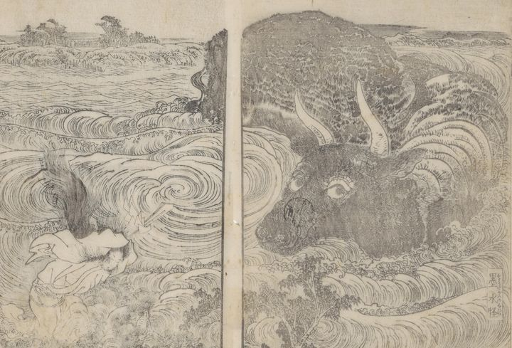

墨水（墨田川）の怪。牛のようなものが浮いたり沈んだりして流れてくる。飛鳥芳太郎妹の菖蒲が黒髪をさばき、単衣のみを着て、白幣を振り、三島大明神に拝している。牛の鼻元に印鑑が押されている。
著作者：葛飾隠士吉滿・蹄齋北馬／出典：親書誌：U426_nichibunken_0445：尼城錦／日付：2017／資源識別子：U426_nichibunken_0445_0004_0000
Copyright (c)2010- International Research Center for Japanese Studies, Kyoto, Japan. All rights reserved.